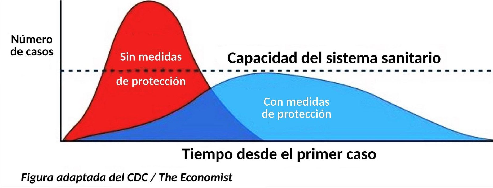
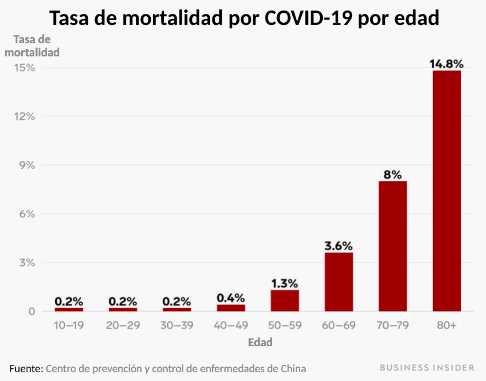
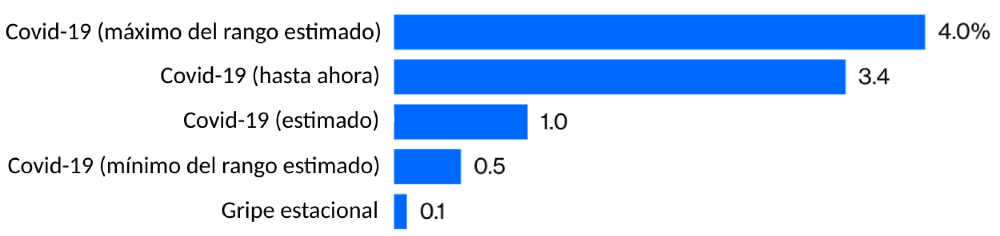
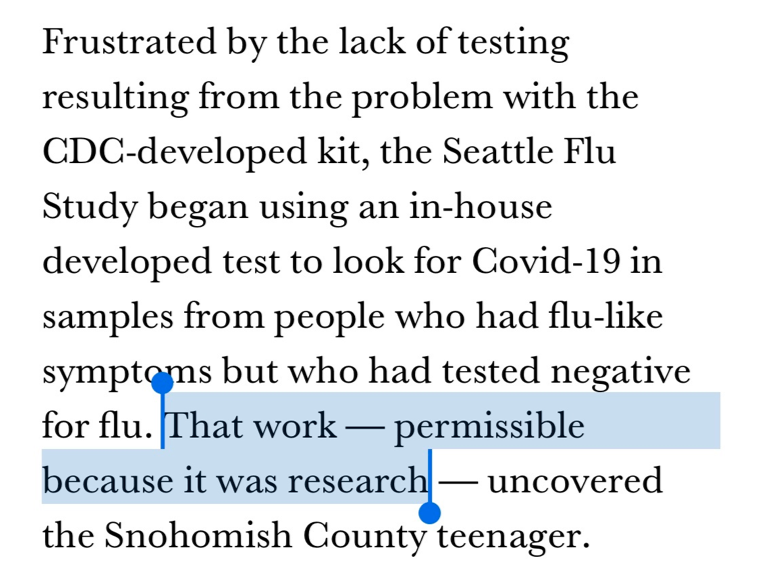
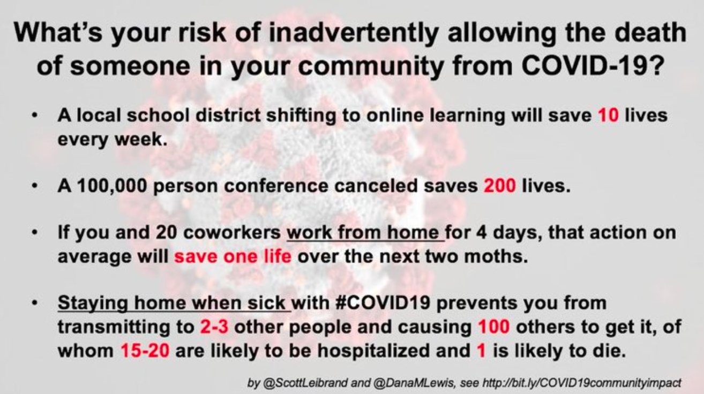
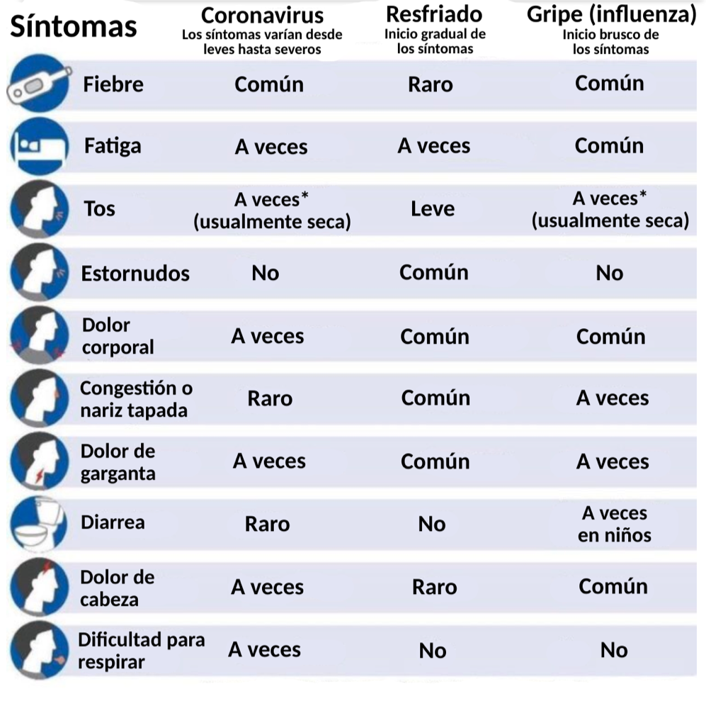

- Sí: la situación es grave.
- Ésto no es una gripe normal
- Lo primero es lo primero
- Ya está aquí.
- Sistema de salud
- Políticas
- Aún hay esperanza
- Lo que debemos hacer…
- Lo que no debemos hacer…
- No te pongas a esperar
- No te toques la cara.
- Mantente alerta
- Reuniones públicas
- No acumules máscaras.
- No des la mano
- No toques ninguna superficie pública
- Llama antes de ir
- No distribuyas desinformación.
- No seas negligente.
- No seas racista.
- Mantente presente con los tuyos. No veas demasiadas noticias.
- Acerca de los autores
- A quién seguir
- Acerca de la traductora
Coronavirus (COVID-19)
Últimos datos y Orientación Detallada
Traducido al Español por Mónica Muñoz Torres, PhD
Actualizado el Mar 17, 2020 4:58 AM (UTC)

Pueden compartir este documento como gusten, usando este vínculo electrónico (URL): www.flattenthecurve.com/es, por Facebook, o por Twitter. Tengan en cuenta que este documento evoluciona conforme la situación cambia. La velocidad es clave, así que tener un buen plan ahora mismo es mejor que tener un plan perfecto más tarde. Si quieres ayudarnos a traducirlo a otros idiomas, por favor sigue estas instrucciones. Ya hay esfuerzos de traducción al Alemán, Francés, e Italiano. La versión original fue escrita en Inglés, y la puedes ver en la página flattenthecurve.com
Noticias: Hemos creado un boletín informativo para ayudar a mantenernos al día con todos los acontecimientos relacionados con COVID19 y los esfuerzos de todos para #AplanarLaCurva. Presiona aquí para registrarte (sin correo spam, sin publicidad o uso comercial, etc. ¡Y es gratis!).
Hemos incluido vínculos electrónicos a las fuentes originales como formas de atribución y referencia.
En casi todos los casos (excepto cuando se trata de un hilo en Twitter que Mónica tradujo, o una guía en Español producida por los CDC en EEUU), los vínculos llevan a información disponible en Inglés. Lamentablemente, no hemos podido encontrar mucha información similar en Español. Si conoces otras de fuentes de información que ya han preparado traducciones para alguno de los sitios de internet e hilos de Twitter, y/o si trabajas en ciencias y quieres ayudarnos a mejorar esta traducción, escríbenos un mensaje privado en twitter.com/monimunozto.
Si quieren contribuir con este sitio, ya sea agregando contenido para esta página, o escribiendo un nuevo documento, presiona aquí o contáctanos aquí.
Sí: la situación es grave.
Mantengan la calma, pero no descarten las advertencias de las agencias de salud pública respecto al Coronavirus. El consenso emergente es que pudo haber sido posible contener el virus hace unas semanas, pero ésto ya no es realista. A pesar que la experiencia de China nos dió tiempo de ventaja, lo desperdiciamos. Estamos entrando en la fase de pandemia, que será seguida por otra de recurrencia estacional, a menos que (y hasta que) encontremos una vacuna (lo que quizás no ocurra hasta dentro de unos 18-24 meses, si tenemos suerte).
Ésto no es una gripe normal
Ni en el mejor de los casos.
La tasa de mortalidad estimada por la Organización Mundial de la Salud (OMS), de un 3.5%, es un promedio de aquella de todos los grupos de edades. La OMS ha proporcionado una gran cantidad de datos obtenidos a través de encuestas, que contradicen los altos números de casos reportados sin síntomas. El consenso dice que las personas con más de 60 años de edad y aquellas con condiciones de salud delicadas son las más impactadas.

Al principio de la epidemia hubo esperanzas de que ese 3.5% fuera una sobreestimación; sin embargo, conforme la evidencia avanza, esta esperanza mengua. Hasta ahora, los números que han salido de Corea del Sur son los más optimistas en el mundo (0.7% de los casos fueron mortales); sin embargo, a) la media de la población de Corea del Sur es más joven, b) Corea del Sur (a diferencia que en los Estados Unidos) ha actuado correctamente desde el principio del brote: han emprendido una campaña masiva para examinar a la población frente al virus, a la par que han sido radicalmente transparentes, han recibido apoyo del público, y han hecho pruebas a los ciudadanos sin que tuvieran siquiera que bajar de su vehículo!. Si esta cepa de Coronavirus es como otros virus, puede que las medidas contundentes para reducir su transmisión también reduzcan la ‘dosis’ promedio de partículas virales que ocasionan cada caso de la enfermedad; puede que ésto reduzca en promedio la severidad de la enfermedad, y que disminuya las tasas globales de mortalidad. El tiempo lo confirmará.
Incluso SI la tasa real de mortandad del COVID-19 fuera tan solo del 1% (como ha sido hasta ahora el caso del crucero Diamond Princess), esa tasa ya sería diez veces más alta que la de la gripe (o influenza) estacional común.

“Las 61,099 muertes atribuidas a la gripe (o influenza) en EEUU durante una temporada tan severa como la del 2017-2018, equivalen a un 0.14% de los 44.8 millones de casos de enfermedades con síntomas gripales. Hubo así mismo 808,129 hospitalizaciones relacionadas con la gripe, un total de 1.8% de los casos detectados. Asumiendo un brote de tamaño similar en los Estados Unidos, multiplique la mortandad y tasa de hospitalización por 5 ó 10, y obtienen números aterradores: 300,000 a 600,000 muertes, y de 4 a 8 millones de hospitalizaciones en un país que tiene 924,107 camas de hospital” (para todas las enfermedades combinadas).
Para la mayoría de las personas, la infección se desencadena en una enfermedad leve pero transmisible; así es como se difunde. A aquellos que se enferman con mayor severidad, la enfermedad termina afectándolos muchísimo. La mortandad no es el único factor que debemos considerar: Italia reporta que el 10% de los casos necesitan, además de hospitalización, cuidados intensivos - y que lo necesitan por un periodo de unas 3-6 semanas. Esto es insostenible.
Lo primero es lo primero
Se ha derramado mucha tinta con especulaciones acerca de la “verdadera” tasa de mortandad; pero aún estamos en la fase inicial de la pandemia, y podría llevar años determinar con precisión cuál es esa tasa. PERO, sabemos que está entre 0.5% y el 4 por ciento; este rango aporta la evidencia adecuada para ordenar acciones preventivas que sean decisivas, inmediatas, y a gran escala. Sin duda, es posible ver que lo más importante que podemos hacer es aplanar la curva de la epidemia para que nuestros sistemas de salud puedan lidiar con la situación, y para dar tiempo a los científicos para investigar posibles vacunas y tratamientos.
Ya está aquí.
Asuma que el virus ya llegó a su ciudad, pueblo, lugar de trabajo, iglesia, etc. Es casi seguro que ya está allí y sencillamente aún no se ha detectado porque hay escasez de tests (exámenes médicos) de detección. Aún más, hay 6 estados que todavía no tienen ni un solo laboratorio capacitado para examinar a un paciente y diagnosticar si tiene esta enfermedad, incluso teniendo los materiales para llevar a cabo el test. Los cálculos provenientes de Italia dicen que al inicio del brote, el número real de infecciones era cuatro veces más alto que el número de casos que era posible confirmar en ese momento. La transmisión ya había estado ocurriendo, imperceptiblemente entre los miembros de la comunidad en Seattle, semanas antes de ser detectada. La ciudad de Seattle y la Universidad de Stanford han estado haciendo un muy buen trabajo preparándose para ponerse al día con sus propios kits de detección; alrededor del 5 al 7% de los exámenes de laboratorio en Seattle han resultado positivos, y cualquier persona (con una orden médica) puede ser sometida a esta prueba.

Frustrados por la falta de tests debido al problema con el kit desarrollado por CDC, el proyecto “Estudio de Gripe (Influenza) de Seattle” empezó a usar materiales desarrollados por ellos mismos para buscar muestras de COVID-19 en las personas que tenían síntomas de gripe, y cuyos tests para la gripe habían resultado negativos. Ese trabajo, permitido por ser considerado un trabajo de investigación - dio con un adolescente en el condado de Snohomish (en el estado de Washington, EEUU).
(Por el bien de la salud pública, la Universidad de Washington (UW) está publicando estos resultados). Hasta ahora, solamente UW y Stanford han logrado progresar con sus propios exámenes de laboratorio (que no provienen de los CDC); ambas instituciones han ordenado que todas las clases magistrales sean dictadas como actividades de aprendizaje a distancia. Esta acción habla por sí sola; más universidades deberían seguir ese ejemplo. Dicho ésto, los profesores necesitan de la tecnología y el apoyo para realizar estos cambios.
Las comunidades educativas que carecen de recursos suficientes (que no tienen computadoras portátiles o carecen de internet) tendrían mayores dificultades para implementar estos cambios. Así que debemos empezar con aquellas universidades (y disciplinas) para las que este cambio no representa un gran esfuerzo. No existe una forma de actuar que funcione igual para todos, pero la velocidad con que se implemente es clave. Profesores, por favor no esperen hasta que los administradores en su universidad tomen una decisión para todo el campus. Tomen la iniciativa de empezar a usar una opción de educación a distancia ustedes mismos. Aquí hay algunas recomendaciones para enseñar en línea, si no hay más remedio.
Sistema de salud
El sistema de salud de EEUU no está lo suficientemente preparado. Ningún sistema de salud lo está.
En EEUU, nuestro sistema de salud cuenta con menos de un millón de camas de hospital, lo cual no es adecuado para acomodar el número de hospitalizaciones que podemos esperar (entre 4 y 8 millones). La Universidad de Johns Hopkins hizo una encuesta global acerca del nivel de preparación para una pandemia, durante un período de 3 años. Su estudio creó una escala de 0-100 puntos que mide cuán listo está un país para responder a una pandemia. Aun cuando EEUU se posicionó entre los primeros países, solamente obtuvo una calificación de 42 entre 100. Sencillamente, no tenemos el equipo, el entrenamiento, o las comunicaciones necesarias para acelerar rápidamente. Nadie los tiene. Por eso es que lo que ustedes elijan hacer hoy es tan importante. Muchos hospitales, en particular los que están en áreas de escasa atención, ya tienen una escasez crítica de personal.
Y aquellos entre nosotros con colegas en el norte de Italia (que ha sido la región más afectada) saben que ellos tienen médicos, doctores especialistas en enfermedades contagiosas, e inmunólogos fenomenales. Así como un sistema social de salud muy efectivo. Su historia no es la de un país en vías de desarrollo con poca relevancia para la situación en EEUU.
Políticas
Comparado con otros países, las políticas de trabajo y cuidado de salud en EEUU son la “tormenta perfecta” para una pandemia.
- No hay garantía de cobertura para licencias médicas por enfermedad.
- Incluso para aquellos que tienen licencias por enfermedad pagas, la cobertura dura usualmente solo unos días, no las semanas que serían necesarias al considerar una enfermedad prolongada.
- No hay garantía de cobertura por licencias familiares para cuidar a parientes enfermos.
- No hay ni apoyo financiero garantizado, ni la planeación suficiente para que las personas se pongan en cuarentena a sí mismas. Así que la gente continúa ignorando las cuarentenas porque necesitan el dinero.
- Muchas personas carecen de seguro médico. Dado el estado de las cosas, (una transmisión imperceptible y la falta de una vacuna), las compañías de seguros tienen una obligación moral pero no hay un incentivo financiero para mejorar los exámenes médicos ni para asegurar que haya acceso al cuidado médico necesario.
- En EEUU el seguro médico está usualmente ligado al empleo, así que cuando alguien se enferma, también se expone a entrar en bancarrota. En un año de pandemia, ésto es devastador para una economía.
El hecho que estos mecanismos de seguridad no han existido hasta ahora en EEUU, complica el comportamiento que se requiere para #AplanarLaCurva cuando comparamos la situación con la de la mayoría de los demás países afectados hasta ahora. Sin embargo, la Cámara de Representantes de EEUU pasó una legislación el viernes (13 de marzo, 2020), que aborda estos asuntos tan críticos. Específicamente, esta ley va a proveer mejores beneficios para desempleados, pruebas médicas gratuitas para detectar el virus, y fondos adicionales para asistir con insumos y con Medicaid. Esta ley fue reportada en el periódico New York Times, en CNN, y en otras organizaciones de noticias. Puedes leer el texto completo de la nueva ley aquí, en Inglés.
#Seguimiento global y comunicación
Alrededor del mundo, los médicos están siendo apaleados en el frente de batalla de esta crisis; la falta de equipo de protección está causando que se infecten y que ellos mismos sean incapaces de conseguir el cuidado que necesitan. Pueden leer esta historia para ver ésto desde una perspectiva personal. Por supuesto que este no es el único caso; las historias continúan apareciendo.
A nivel global, el autoritarismo también es terrible para el control de una pandemia porque reprime la posibilidad de incorporar experiencia en la materia de interés y reprime la transparencia que se requiere para usar los recursos más efectivamente. Ejemplos de ésto llegan desde lugares como China (muy temprano en la epidemia), y desde Irán, Turquía y Rusia, quienes hasta hace poco hablaban de un escenario poco realista sin ningún caso. Las páginas de la Embajada de EEUU en diferentes países ahora reporta casos, por ejemplo, la Embajada Estadounidense en Rusia. Ya se encuentran disponibles varias visualizaciones muy efectivas de datos, y formas de seguir el virus, por ejemplo en el Centro de Recursos de Coronavirus de la Universidad de Johns Hopkins, y en los mapas del periódico New York Times.
Aún hay esperanza
Aún hay esperanza: ¡Tú! Ese es el trabajo.
¡No se rindan! Ustedes pueden ayudar siguiendo esta guía de orientación tan fielmente como puedan. Entre más temprano tomemos precauciones, entre más precauciones tomemos, más vidas se pueden salvar. Es así de sencillo. Esperen que las personas pasivas que no respondieron ayer sean las que respondan exageradamente hoy. Resistan las ganas de reaccionar al respecto. Sentir ansiedad es normal; la clave es permanecer calmados y trabajar constantemente para controlar la infección, y urgir a los demás para que hagan lo mismo.
Un amigo muy querido en Beijing me dijo: “Mantente tan alejada como puedas del miedo y la histeria que puede estar llegando a tu ciudad. Se razonable, pero no permitas que eso te impida amar a los demás seres humanos. Se generosa en vez de acumular todo lo que puedas. Y en los días más difíciles (o después de ver demasiados noticieros) ¡súbele a la música y baila! ¡Celebra las cosas buenas! Esas cosas están aquí, y van a permanecer aquí, ¡y tú puedes ser un catalizador de cosas buenas!”
Aquí están las instrucciones para ser ese catalizador.
Lo que debemos hacer…
Lávate las manos.
Al menos por 20 segundos, con agua tibia y con jabón. Ésta es una lista buenísima de canciones en Inglés que pueden cantar para pasar el tiempo. A diferencia de otros virus más “obstinados” como en de la polio, los virus en la familia de coronavirus usualmente no sobreviven más que unas cuantas horas en superficies firmes, aunque para algunos, pueden llegar a ser días. El blanqueador (lejía o límpido) o el etanol son formas más efectivas para descontaminar superficies firmes que para descontaminar la piel humana. Así que no acumulen el gel antibacterial (>60% alcohol en gel). Ese sólo debe ser usado cuando no tengan acceso a jabón y agua en un lavamanos. ¿Están en un restaurante? Lávense las manos. ¿Están en el colegio? Lávense las manos. Lavarse las manos vigorosamente con jabón es realmente vital para reducir la transmisión; aquí pueden ver información interesantísima acerca de la explicación científica. Si no hacen absolutamente nada más, ¡Lávense las manos!
Mantente conectado
Mantente conectado, pero evita las multitudes.
Lo mejor es mantenerse físicamente apartado de otra gente. Lo más seguro para mantenerse alejado de una gota infecciosa son 3 metros o más. Entre más riesgos de salud tengan (edad, cirugías recientes, cáncer, un sistema inmunológico en riesgo, asma, diabetes, etcétera), más deberían evitar las multitudes.
El CDC en EEUU ha recomendado que los adultos mayores se queden en casa tanto como sea posible. Pero recuerden, a largo plazo este aislamiento podría tener impactos negativos en la salud mental de muchas personas. Cultivar relaciones significativas es un factor determinante y bien establecido, aunque poco apreciado, en cómo se desenlaza una situación en cuestiones de salud. Así que vean a las personas que aman, pero consideren hacerlo mediante actividades de bajo riesgo. Por ejemplo, vayan de caminata con un grupo pequeño en lugar de irse a un evento en un lugar encerrado. Vayan a la playa. Monten en bicicleta. Jueguen al Golf. Hagan más picnics. Y esto no se va a acabar en una semana, así que tómenlo despacio.
Disminuye tu riesgo
Disminuye tu riesgo mediante las cosas que eliges hacer a diario.
La acumulación de todas las cosas que elijamos hacer para llevar una vida más sana y segura todos los días, no solamente esta semana sino en los siguientes meses, pueden aplanar la curva. Continúen apoyando la economía local, pero eviten ir en horas pico; distribuir el acceso unos 15 minutos (antes/después de las horas pico) puede ayudar a reducir las multitudes. Lugares como restaurantes museos de arte y transporte público van a ser mucho menos riesgosos (y más agradables) si se visitan por fuera de las horas pico.
- Jugar deportes que no son de contacto es mejor que jugar deportes de contacto. Por ejemplo, jugar tenis es mejor que (>) jugar rugby
- Cocinar tus propias comidas > pedir a domicilio > pedir y llevar > comer en el patio del restaurante > comer en el restaurante
- Opciones para ver películas y TV en línea > cines
- Eventos al aire libre > eventos en salones (y los eventos pequeños son más recomendables que los grandes)
- Domicilios / pasar a recoger afuera de la tienda > ir en persona
- Cumplir desde lejos > atender servicios religiosos
- Pastelitos / ponquecitos de cumpleaños > pasteles (si alguien sopla las velitas)
- Toma tu café / cerveza / cóctel en la mesa en lugar de tomarlos en el bar del lugar
- A los artistas que actúan en vivo les va a afectar ésto económicamente. Consideren apoyarlos usando Patreon, PayPal, o yendo a eventos más pequeños. Promuévanlos en medios sociales. Compren sus productos artísticos directamente.
Ponte la vacuna contra la influenza
Ponte la vacuna contra la influenza (y para los mayores de 60, también la vacuna contra la neumonía).
Mejor tarde que nunca. La vacuna contra la influenza no les va a proteger contra el Covid-19. Pero va a reducir la posibilidad que les de influenza, y con ello la posibilidad que necesiten ser hospitalizados. Ésto también reduce las oportunidades que contraigan el coronavirus mientras estén ahí internados. Si son mayores de 60 años, aplíquense también la vacuna contra la neumonía, por la misma razón.
Visitas médicas
Cancela todas las visitas médicas en persona, mientras nos sean esenciales.
Los hospitales son focos de transmisión. Así que háganse vacunar en la farmacia en lugar de ir al doctor. Busquen la forma de hacer terapia física en casa, si es posible.
A los profesionales en Telemedicina, este es su momento para salvar el día. Por el beneficio de todos, pero especialmente aquellas personas en áreas rurales que van a ser más afectadas y que carecen de fácil acceso a cuidados médicos. Los sitios https://doxy.me y https://vsee.com/clinic proveen plataformas de video que cumplen con los requisitos de las Leyes de Portabilidad y Responsabilidad de los Seguros de Salud (HIPAA por sus siglas en Inglés).
La Universidad de Johns Hopkins está desarrollando recursos para empleados y administradores hospitalarios. Aquí hay más información disponible.
Cancela los viajes
Cancela todos los viajes que no sean esenciales. A todos los lugares.
La enfermedad puede empezar despacio y acelerar súbitamente. Si están lejos de casa cuando esto ocurra, van a estar lejos de los sistemas que los pueden mantener alimentados y bajo cuidado, incluso si no resultan teniendo un caso tan severo. Si su caso es grave y no tienen seguro de viajes, podría resultarles bastante costoso. E incluso si permanecen saludables, podrían terminar en una cuarentena. Ésto es, en el mejor de los casos aburrido, y en el peor de los casos involucra condiciones terribles, sin mencionar probablemente muy costosas. Es posible que estén en riesgo de ser infectados incluso si son cuidadosos. En términos de riesgo, cada vez importa menos la historia de viajes, especialmente porque estamos navegando a ciegas debido a la falta de exámenes médicos; los datos acerca de infecciones confirmadas están disponibles aquí, gracias a la universidad Johns Hopkins. Y aquí hay información acerca de la genética de estas cepas.
Abastécete
Hay que abastecerse de comida y elementos esenciales – Temprano, gradual, y responsablemente
La Dra. Emma Hodcroft se tomó el trabajo de escribir un hilo importantísimo acerca de lo crítico que es prepararnos para la eventualidad de un brote severo de #COVID19 #SARSCoV2 #Coronavirus #SARSCoV19. Yo me he tomado la libertad de traducir este hilo al Español. Distribúyanlo! https://t.co/pcrHz8KPTt
— Monica Munoz-Torres, PhD (@monimunozto) March 2, 2020
“Los expertos no están diciendo que compres cosas esenciales porque piensan que habrá escasez de comida y la sociedad va a colapsar. Si no porque unos pocos días de compras en pánico y grandes demandas pueden causar más pánico y estrés innecesarios.” Además formarse en una línea con cientos de personas no es muy aconsejable. Compren un poco más de lo que necesitan. “Prepararse no significa no hacer nada; tampoco significa exagerar. Es hacer de nuestra parte para aliviar la tensión en el sistema, que las pequeñas interrupciones sean tan cortas como sea posible, y que haya recursos disponibles para quienes más los necesiten.”
No se preocupen por comprar agua embotellada; es muy poco probable que el agua del grifo vaya a verse impactada, y hervir el agua sería adecuado si llegáramos a necesitarlo por alguna razón. Es muy poco común que haya síntomas intestinales por causa del coronavirus, y no hay razón para pensar que el papel higiénico se vaya a acabar. Compra lo que necesites, y deja el resto para los demás.
Trabaja desde casa
Si puedes trabajar desde casa, hazlo tanto como sea posible
No todo el mundo puede trabajar desde su casa todo el tiempo. Está bien si ese es el caso. Trabajar desde casa, aunque sea por solo una parte del tiempo, es mejor que nada. No esperen a que su lugar de trabajo ordene que todo el mundo trabaje desde casa. Pregúntenle a su supervisor si esa es una posibilidad para ustedes, personalmente. Animen a sus colegas.
Si pueden trabajar desde casa, háganlo precisamente porque el peluquero, los maestros de sus hijos, los trabajadores en su restaurante local, las personas que sirven el café, y sus doctores, no lo pueden hacer.
Ahora más que nunca hay muchos programas de computador que son óptimos para facilitar la colaboración a distancia. Mis favoritos están en la lista de abajo. Escoger la mejor herramienta no es lo importante: usa la que más se acomode a tu equipo y condiciones de trabajo.
- Google drive (documentos en colaboración) es gratuito
- Zoom.us (videoconferencias) no tiene costo hasta los 40 minutos
- Slack/Gitter (mensajería instantánea, gratuito)
- Skype también es gratuito, y funciona muy bien para videoconferencias entre dos personas
Pruébenlo antes de usarlo en una reunión. Revisen si falta algo para que estén listos cuando ya no sea solo una opción. Aquí también hay algunos recursos para gente con Trastorno Hiperactividad con Déficit de Atención (ADHD por sus siglas en Inglés) que necesitan trabajar desde casa por primera vez.
Camarada en la influenza
Busca un ‘camarada en la influenza’ (o ‘amigo en la pandemia’) y prepara un plan de emergencia para que alguien se encargue de cuidar a los niños, las mascotas, y a los que necesitan atención especial.
En especial si viven solos. En caso que haya transmisión local, llámense todos los días. Si alguno se enferma, llámense dos veces al día y pónganse de acuerdo con un plan que no requiera contacto para llevar comida, medicinas para el dolor, otras recetas médicas, y para que alguien ayude a cuidar de los dependientes de esa persona.
Las personas que ya han estado lidiando con condiciones médicas preexistentes que requieren más cuidado pueden darnos consejos útiles acerca de su experiencia preparándose, y acerca de cómo navegar los retos administrativos que muchos de nosotros no hemos tenido que enfrentar hasta ahora. Pregúntenle a ellos también qué necesitan de ustedes y provéanlos de esas cosas.
Esta es una muy buena oportunidad para pensar en una versión más completa de esos planes de contingencia para el cuidado (por si por alguna razón el paciente muriese).
Interacciones sociales
Decide cómo vas a enfrentarte a la situación; reduce las interacciones sociales que no sean esenciales.
Para usar un tono más relajado, ahora bien pueden usar la excusa de la pandemia para salirse de cualquier reunión en persona a la que se sientan “obligados” a asistir: una boda, una fiesta o cualquier reunión que solo atenderían porque tienen un leve sentido de obligación. Si no están convencidos de que verdaderamente se van a divertir, o que van a darle una satisfacción a alguien que amen de verdad, simplemente. no. vayan. O háganlo desde lejos, si se puede. O aparezcan por unos minutos y luego se van. Manden un regalo en lugar de ir.
Si están planeando una boda y están preguntándose qué hacer, aquí hay un hilo cortito en Twitter con algunas opciones.
Tu hogar
Mantén tu casa limpia y crea rutinas para cuando regreses a casa después de salir.
En este momento estoy en el proceso de crear una guía para ésto, y le doy la bienvenida a los que quieran ayudarme. Algunas de las cosas que se me vienen a la cabeza son: si puedes, dedica un área en la entrada donde todos puedan limpiarse al entrar a casa. Quítense los zapatos los abrigos. Si trabajan en un ambiente de alto riesgo como un hospital, una casa de cuidado para adultos mayores, etc., laven su ropa inmediatamente después de entrar, séquenla al calor alto, o al menos al sol. Lávense las manos inmediatamente. Aíslen su correo, los paquetes, las compras (incluyendo la comida) antes de traerlas dentro de la casa y déjenlas aisladas como mínimo por un par de horas. Si pertenecen a un grupo de alto riesgo, consideren dejar sus compras aisladas por más tiempo, por ejemplo, un par de días. También eviten comer productos crudos, y descontaminen todos los productos que entran a su casa. Los resultados de investigación muestran que el virus puede sobrevivir hasta 4 horas sobre superficies de cobre, hasta 3 días sobre plástico y acero inoxidable, y unas 24 horas en superficies de cartón. [aquí se necesita una guía para indicar la mejor forma de hacer esto; Qué porcentaje de límpido o lejía se necesita, Por cuánto tiempo, etcétera.]
Ve más allá de ti mismo.
En todo momento, se amable con todos y ten en cuenta las preocupaciones de los demás. Puede que tú estés en un grupo de bajo riesgo y que sientas que ésto no es nada por lo que debas preocuparte, pero tu vecino de 80 años, o tu amigo que acaba de tener cirugía del corazón puede sentirse diferente. Todas las personas importan; ninguna es prescindible.
“Con todos los vuelos cancelados, ésta es la primera vez que he visto la normalización de dedicarnos a pensar que “éste es un problema de todos.” Si, ese evento menor al que ibas a asistir puede no salvar muchas vidas, pero el hecho que todo el mundo está haciendo lo mismo lo hará. Necesitamos la misma mentalidad para enfrentarnos al cambio climático.” Debido a que viajar es una de los modos de dispersión más grandes, usa esta ocasión para comprar frutas y verduras locales. Ésto reducirá la transmisión de coronavirus, apoyará la economía local, y va a generar ahorro en créditos de carbono.
Zona de riesgo
Prepara una “zona de riesgo” en tu casa, en caso que alguien se enferme.
Prepara tu casa para la posibilidad que vayas a necesitar aislar y cuidar a uno de los miembros de tu hogar. Prepara el cuarto por adelantado con comida que la persona infectada pueda consumir sin necesidad de prepararla y sin necesidad de interactuar en persona con otros. Lo mejor es tener un baño dedicado específicamente para la persona infectada. Siendo realistas, dada la escasez, es posible que no vayas a tener acceso a usar máscaras, pero si tienes una, dale prioridad a que la use la persona infectada el lugar de las personas que están cuidándola.
Pasa la voz
Pasa la voz y pídele a tus representantes de gobierno que apoyen la investigación que es vital en este momento.
El sitio de internet que lleva la cuenta de cuántas personas han visto el documento original en Inglés indica que la información se está esparciendo por Twitter; muchos científicos lo usamos en masa. Sin embargo, la información no está siendo esparcida en esos mismo volúmenes en Facebook, y no se está distribuyendo directamente en los lugares en que el público en general más lo necesita. Así que llama a un amigo; llama a tu familia. Cada uno de ustedes podrá ejercer la mayor influencia en las vidas de todas las personas a las que ustedes conocen personalmente. Aun cuando existen razones para no entrar en pánico, la mayoría de las personas deberían estar más preocupadas de lo que están. Haz que más gente se entere y así esta información será más efectiva a largo plazo.
“Un aspecto en el que los políticos deberían estar mejor informados es en lo fácil que los niños pueden transmitir el virus. Sabemos que los niños sufren casos más leves que los adultos, pero ¿sabemos si lo transmiten a otras personas?” La evidencia que se ha generado alrededor de este tema es aún contradictoria.
Mientras tanto haz lo mejor que puedas para demostrar, enseñar, y reforzar la buena higiene de manos con los niños; pero también sé realista. Como no hay una indicación muy clara de hasta qué punto los niños son vectores, mantén sus uñitas tan cortas como sea posible (y seguro para los niños) para que el virus tenga menos espacios en los que esconderse. Yo deje de usar anillos por esa razón precisamente; pero no conozco ningún estudio formal que haya revisado esta idea de los anillos.
Solamente si estás en una posición financiera y logística para hacerlo, por favor consideren sacar a sus hijos del colegio para que estudien desde su hogar, o al menos eviten que los niños participen en las actividades extracurriculares después del colegio. No pongan en riesgo la educación de sus niños, pero consideren que cada medida de distancia, por pequeña que sea, ayuda. Hagan lo que puedan y no se preocupen del resto. Nadie debe sentirse personalmente responsable por todos los demás.
Lo que no debemos hacer…
No te pongas a esperar
No te pongas a esperar para ver cómo resultan las cosas. La velocidad aquí es clave.
Lee este documento y concéntrate en “#AplanarLaCurva” (#FlattenTheCurve) ya mismo. No hay ninguna ventaja para aquellos que adoptan las políticas de manera tardía. Aún no hemos llegado al pico de la transmisión, y ya hay muchas personas a quienes les han dicho que no hay cómo atenderlos en los centros de salud.
No te toques la cara.
Tocarse la cara es la forma más común de introducir el virus al cuerpo. Es muy difícil evitarlo. Es por ésto también que aconsejamos quedarse en casa y evitar las multitudes. Y ésta también es la razón por la que las medidas “verticales” (cancelar eventos e imponer cuarentenas, etc.) funcionan. La mayoría de las personas, incluso aquellas que implementan prácticas básicas de higiene, tocan su cara constantemente sin siquiera darse cuenta. Por favor mantén ésto en cuenta, especialmente ahora que se acerca la temporada de alergias.
Mantente alerta
Mantente alerta contra las falsas esperanzas de los “remedios caseros.”
Se amable con tu propio cuerpo. Y espera que las corporaciones quieran capitalizar contigo a causa de tu miedo. No compres productos que afirman protegerte o sanarte en este momento. Ya existen productos como el ibuprofeno y el paracetamol, los cuales pueden ayudarte a disminuir algunos de los síntomas; sin embargo, hasta ahora nada ha sido confirmado como un remedio. No le crean a las personas que dicen que los cristales, los aceites esenciales, etc. les han ayudado; no hay forma de saber si las personas que ofrecen estos productos tienen las mejores intenciones en mente, o están tratando de aprovecharse de la situación. La idea es la misma: muchos pacientes parecen mejorar espontáneamente, dado que la mayoría de los casos más leves se han resuelto sin necesidad de intervención farmacéutica. En lugar de preocuparte por usar ‘remedios caseros,’ aliméntate bien, haz ejercicio, descansa, no descuides tu salud mental, y no uses tu ansiedad como una excusa para portarte mal con los demás.
Reuniones públicas
No vayas a reuniones que no sean esenciales.
Hay evidencia histórica contundente demostrando que cancelar eventos es una medida de salud pública muy efectiva. Hay un hilo en Twitter con una lista muy buena de recursos que te puede ayudar a convencer a los que toman las decisiones para que se cancelen eventos. Y aquí viene una imagen impresionante:
There is a reason for canceling public gatherings. In a pandemic, don't be Philadelphia (held a parade in 1918 when cases started to come up, downplayed cases), be St. Louis (canceled gatherings). More here: https://t.co/KE7RYbxDGM @mlipsitch pic.twitter.com/wyrHx0nOLA
— Florian Krammer (@florian_krammer) March 6, 2020
“Existen razones por las que debemos cancelar encuentros y reuniones públicas. En una pandemia, no seas Filadelfia (que celebró un desfile en 1918 cuando los casos apenas estaban empezando a brotar, y minimizó los casos). Más bien sé como San Luis (que canceló los eventos). Más información aquí: artículo científico.”
No esperen para cancelar hasta cuando las cosas ya estén terriblemente mal. Medidas tan extremas como cerrar los centros educativos (colegios, universidades) usualmente le ponen una carga más pesada a las poblaciones más vulnerables (por ejemplo, debido a que los niños más pobres solo comen en el colegio). Si estás en posición de ayudar a los niños que se encuentran en esta situación, por favor trata de donar tus ayudas directamente. El que las escuelas primarias cierren dificulta mucho las cosas para el personal de salud, profesores, oficiales de gobiernos locales, etc. a quienes se les complica llegar al trabajo y mantenerse al día con sus responsabilidades. Es posible que algunos niños no tengan ningún lugar en donde quedarse si sus papás están en el trabajo. Nunca es muy tarde para tomar medidas agresivas que nos distancien socialmente, pero estas medidas son más efectivas si son puestas en acción antes que el 1-2% de la población sea infectada. [Leí ésto en algún lugar pero perdí la referencia. Por favor contáctenme por mensaje directo si me pueden ayudar]. Y no es solamente cuestión de evitar los eventos con muchísimas personas, incluso los eventos pequeños pueden tener consecuencias negativas.
Hice un llamado para producir una herramienta que pueda ayudar a las personas encargadas de planear eventos, para que puedan estudiar la decisión de si hay o no hay evento de una forma más apropiada. Si eres un científico interesado en colaborar con ésto, por favor avísame. Mientras tanto, aquí esta ésto:

No acumules máscaras.
Los profesionales de la salud necesitan las máscaras con urgencia, para cuidarte a ti y a tus seres queridos. Si estos profesionales están bajo riesgo, todos estamos bajo riesgo. Las máscaras no son lo más útil que puedes hacer para protegerte: es difícil usarlas apropiadamente, especialmente por periodos largos de tiempo, y su efectividad contra las partículas virales se acaba cuando el filtro se humedece conforme tú vas respirando (al cabo de unos 30 minutos). Además, utilizar una máscara puede causar que te toques la cara más frecuentemente.
No des la mano
No des la mano. Se creativo con los saludos que no incluyen contacto entre personas.
Aquí hay algunas opciones divertidas:
- ponerse las manos sobre el corazón
- imitar el gesto de “Wakanda por siempre”
- hacer la venia
- hacer una reverencia
- saludar con el gesto “Vive mucho tiempo y Prospera”
- saludar moviendo los dedos, o saludar como una princesa
- alzar las manos y agitarlas (conocido como “manos de jazz” en Inglés)
Una de los mejores beneficios de estos saludos sin contacto, es que ni siquiera tienes que ponerte de acuerdo con otras personas por adelantado. Contrario a lo que pasa cuando estrechas la mano, abrazas o besas a alguien, no hay necesidad de tener un protocolo ya planeado. Haz lo que mejor se acomode a tu estilo.
No toques ninguna superficie pública
No toques ninguna superficie pública con tus dedos. Se creativo.
Cada vez que sea posible, usa los nudillos y no las puntas de tus dedos, por ejemplo, para tocar los botones del elevador, el interruptor de la luz, etc. En lo posible, trata de abrir las puertas sin usar tus manos, en lugar de eso, usa tus caderas para empujar puertas, los codos para abrir puertas con manijas, la manga de tu ropa para abrir las perillas redondas, etc.
##Si estás enfermo
No vayas a trabajar si estás enfermo.
Es buena idea incluso si no es coronavirus. Los sistemas de salud necesitan toda la ayuda que podamos brindar liberando cada implemento y espacio para que esté disponible para ellos. No causes pánico sin necesidad. No asumas que es sencillamente un resfriado. Y definitivamente quédate en casa si tienes fiebre o tos.
Llama antes de ir
No vayas al doctor sin antes llamar
NO vayas directamente al hospital. Aquí hay recomendaciones en Español de los CDC de EEUU, y aquí está en Inglés.
Los centros de llamadas están por supuesto abrumados en este momento con todas las “personas sanas que están preocupadas,” así que trata de dejar esas líneas abiertas para los que realmente lo necesitan.

No distribuyas desinformación.
No puedo evitar que la gente utilice este documento con otros propósitos y lo mezcle con consejos que no tienen fundamento científico. Si lo haces, por favor no me des crédito. Aún no hay tratamientos.
No seas negligente.
No seas esa persona. Este es un problema de todos. No seas negligente pensando que si te enfermas ahora vas a ‘evitar la congestión.’ Enfermarse al comienzo de una pandemia no beneficia a ningún individuo ni a la población. Estarías poniendo en riesgo las vidas de los demás. Ésto no se trata solamente de la gente que está muriendo, sino de cómo están muriendo. Y luego hay que considerar también el trauma físico - hablando del estado emocional, ésto es lo opuesto de un “buen morir.” La gente está muriendo sola, alejados de quienes aman por una cuarentena.
Los reportes iniciales describen que los pacientes que se recuperan desarrollan anticuerpos que les proveen inmunidad si llegan a ser infectados con la misma cepa. Sin embargo, estas son muy buenas noticias para el desarrollo de vacunas, así que a aplanar la curva y a esperar.
Las cosas pueden ponerse muy graves: una persona describió que el dolor le hacía sentir como si le estuvieran pasando los pulmones por una máquina de hacer fideos. El 10% de los casos requieren cuidados en unidades de cuidados intensivos (UCI) y respiradores artificiales. Incluso si los reportes de autopsia de China han sido tergiversados o exagerados, existe la posibilidad de daños pulmonares a largo plazo o permanentes si alguien se enferma y después se recupera. Hay muchos espacios en blanco en la información acerca de los posibles daños pulmonares, y la razón principal es que todos los que están calificados para enterar exactamente al público de lo que está pasando están demasiado ocupados salvando vidas y poniéndose en riesgo ellos mismos.
No seas racista.
No uses tu “preocupación” como una forma de esconder tu racismo. El virus ya está aquí, ahora mismo. Podría haber empezado en cualquier lugar del mundo. Simpatiza con todos de la misma forma que lo harías si la fuente del virus fuera tu propia ciudad. La próxima vez, puede que lo sea.
Mantente presente con los tuyos. No veas demasiadas noticias.
Cuando ya hayas hecho todo lo que puedes, descansa. Retrocede para tomar perspectiva. Retrocede un poco más. Ve algo chistoso en la televisión. Lee un buen libro. Aprende a tocar un instrumento. Ve a trabajar en el jardín. Abraza a los chicos. Llama a tu mamá. Abraza a tu mamá. Llama a tus hijos. Mantente presente con los tuyos. Toma esta oportunidad para dar gracias por estar vivo en este planeta maravilloso. Estamos juntos en ésto, así que cuidémonos entre todos.
Acerca de los autores
Puedes leer más acerca de los autores en esta página.
Afiliaciones
Por favor recuerda, no estamos hablando en nombre de ninguna institución.
Estamos haciendo todo lo posible para incluir solamente fuentes confiables de información y mantenerla actualizada. Por favor comuníquense con nosotros si observan algún problema con la veracidad de los datos o con cuán actualizados están. Si eres una viróloga o un profesional de la salud, etc., y quieres contribuir, por favor visita la página con instrucciones acerca de cómo hacerlo.
Le agradezco a Mónica Muñoz-Torres por corregir la versión de este texto en Inglés y por traducirlo al Español.
Considera este contenido bajo licencia de dominio público CC-0, en cuanto se refiere al contenido original de este documento. La licencia no puede cubrir (y no lo hace) los recursos que yo he incluido como referencia. No mezcles esta guía de información con pseudociencia.
A quién seguir
A quién seguir si estás interesado en epidemiología y pandemias
Los verdaderos héroes son los que están en el frente de batalla y los que he incluido como referencias. Aquí hay algunas de las personas que estoy siguiendo por varias razones. El que yo los cite no quiere decir que ellos hayan leído o que ellos apoyen esta guía en su totalidad. En el vínculo encontrarás una lista de esos perfiles en Twitter (algunos incluidos en las imágenes al final de este documento), y también otros perfiles a los que sigo, que no se relacionan con este brote. Velos aquí: https://twitter.com/figgyjam/following
Cómo colaborar con el sitio
Primero que nada, ¡gracias! Estamos poniendo mucho trabajo voluntario en este sitio para tratar de convertirlo en uno de los mejores y más útiles recursos en este momento de incertidumbre sobre el COVID-19. Sin embargo, hay algunos costos asociados, por ejemplo los costos de los servidores, o la posibilidad de contratar a alguien que ayude a administrar el trabajo a medida que el sitio crezca.
Si quieres colaborar económicamente, agradecemos muchísimo cualquier monto, y lo puedes hacer aquí.
Si quieres contribuir con contenido, revisiones o traducciones, mira aquí.
No te sientas en la obligación de contribuir - esta información es libre y gratuita para acceder y compartir.
Ten por seguro que todo el dinero que recaudemos solo será usado para hacer funcionar, construir y mantener este sitio.
¡Gracias de nuevo! Y lávate las manos. 🙂
Acerca de la traductora
Mónica Munoz-Torres, PhD (ORCID). Soy doctora en genética, graduada del Departamento de Genética y Bioquímica de la Universidad Clemson. Tengo el placer de conocer a Julie McMurry como amiga y colega. Al igual que Julie, Soy Profesora Asistente (investigadora) en la Universidad Estatal de Oregon, en el Departamento de Toxicología y Biología Molecular del Medio Ambiente. También soy Profesora Afiliada a la división de Genómica del Medio Ambiente y Sistemas Biológicos del Laboratorio Nacional Lawrence Berkeley. Me desempeño como coordinadora de programas para el Laboratorio de Ciencia Traslacional e Integrativa (TISLab, por sus siglas en Inglés).
Mi traducción no habla en representación de ninguna de estas instituciones. Yo creo que Julie ha recopilado un recurso de valor incalculable para todos, y espero que haberlo traducido sea un granito de arena que contribuya a que más personas puedan acceder a esta información y puedan empezar a tomar medidas preventivas ya mismo. Hasta donde me ha sido posible, me he esforzado por generar una traducción muy fiel al documento que Julie preparó. Cuando ha sido necesario, he adaptado los coloquialismos que ella ha usado en Inglés para acomodarlos a frases comunes en Español con los que la gente se pueda relacionar mejor. El Español es mi lengua materna, y he vivido estudiando y trabajando en ciencias biológicas y biomédicas en EEUU durante los últimos 20 años.
Agradecimientos a Ignacio Tripodi (@ignaciot, investigador en la Universidad de Colorado, Boulder) por su ayuda traduciendo las gráficas. También les agradezco a Ignacio, Paola Nagoya, y Rocío Rodríguez Vidaña por su ayuda editando esta traducción al Español. Los archivos de las gráficas editados usando Krita para editar fácilmente están públicamente accesibles en esta carpeta compartida, para reutilizar con otros idiomas.